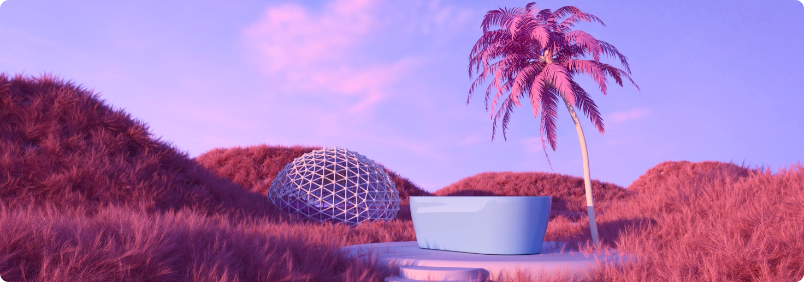

@everyone - PBUY😆 1. I am not pleased with the general attitude of the
frontend track, all the recordings over the past one week no one has
gone back to view or relearn one or two things. This could mean either
of two things: a. we understand everything taught in class b. we don't
really want to accept we haven't mastered things yet. whichever one it
is it's a wrong notion. Just like I said on our punctuality and
attendance. This is also likely the last time I will comment about this
attitude. The floor is opened for people to cite their difficulties and
all.
Kindly Read Over
Contact of the Panphoto staff
The members are very importance to deliver their services in an
appropriate way.
SOCIAL AMMENITIES
Electricity, Water Resources,
Electricity, Water Resources,
Electricity, Water Resources,